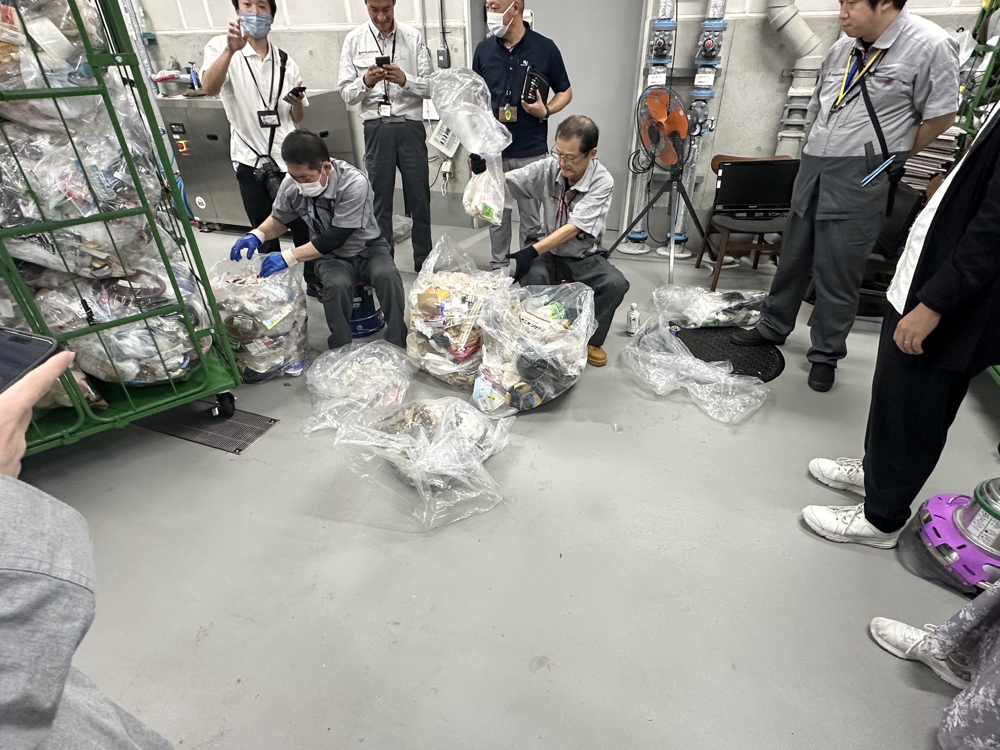
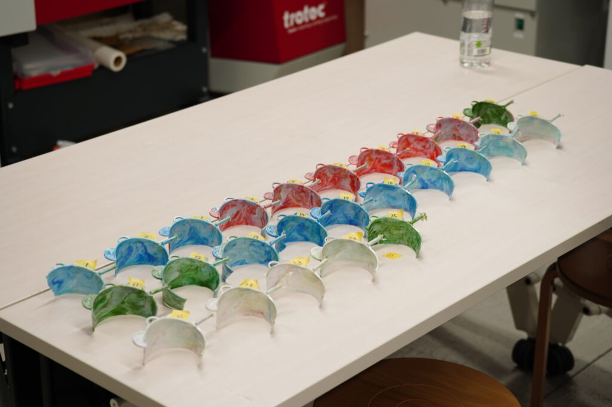

概要
神奈川大学経営学部の道用ゼミでは、キャンパス内で廃棄されるプラスチックごみを有効活用し、サーキュラーエコノミー（循環型経済）の推進を目指す取り組みを進めています。 このプロジェクトは、株式会社湘南貿易との共同プロジェクトとして実施されています。
プロジェクトの目的
キャンパス内で発生するプラスチックごみ、特にペットボトルキャップを再利用し、新たな製品を制作することで、資源循環を促進しながらごみ削減を目指します。
活動内容
- 現状把握： 我々はキャンパス内のごみ集積所を見学し、プラスチックごみの分別や処理の課題を学びました。特に、手作業での分別の手間や効率性の問題を実感しました。

- アイデア創出:ペットボトルキャップの再利用方法をテーマに、約2か月間の議論を重ね、3Dプリンターやレーザー加工機を使ってプロトタイプ（試作品）を制作しました。
- 発表会： 2024年11月29日には、12種類のプロトタイプを湘南貿易の担当者に向けて発表しました。
発表会後の展開
発表されたプロトタイプを基に、湘南貿易が金型を製作し、実際にキャンパス内で回収されたペットボトルキャップを素材とした製品が制作されました。
